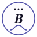
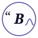

16
32
48
80
128
dark

1632
48
80
128
dark

1632
48
80
128
dark
Font caveat: the italic B (and the opening quote
in Option C) is set in 'Fraunces' with a Georgia fallback. When
an SVG is loaded via <img>, it renders in an isolated
context that doesn’t see the page’s Fraunces — so the
B may fall back to Georgia in this preview. For the chosen
final logo we’d either inline the SVG or convert the B
glyph to a path so the logo is font-independent.